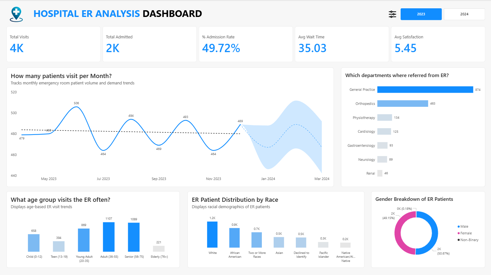

Tracks ER visits, admission rates, patient demographics,
referral departments, and satisfaction metrics to help healthcare
leaders improve operational performance and patient outcomes.
Overview
This Power BI dashboard delivers a comprehensive view of emergency room operations across two fiscal years — tracking 4K patient visits, a 49.72% admission rate, and performance metrics including average wait time and patient satisfaction across demographic segments and referral pathways. Designed for hospital administrators and ER department heads, it surfaces demand patterns, patient population characteristics, and departmental referral flows to support capacity planning and service delivery decisions. The dashboard transforms raw ER encounter data into a clinically and operationally actionable intelligence tool.

Business Question
Emergency departments operate under constant pressure to balance patient volume, wait times, admission rates, and resource allocation — often without a consolidated view of who is coming in, when demand peaks, where patients are being referred, and how satisfied they are with the experience. A 49.72% admission rate means roughly half of all ER visits result in inpatient admission, placing significant downstream pressure on hospital bed capacity and specialist departments. Without visibility into age-group demand patterns, racial demographics, and referral volumes by department, ER leadership cannot make informed decisions about staffing, triage protocols, or inter-departmental resource sharing.
Key Insights & Features
- Core KPIs Tracked
-
Total Visits (4K), Total Admitted (2K), Admission Rate (49.72%), Average Wait Time (35.03 minutes), and Average Satisfaction Score (5.45) — providing an immediate operational health snapshot that ER managers can act on without drilling further.
- Monthly Visit Trend w/ Forecast
-
A line chart tracks monthly ER volume from May 2023 through Dec 2023, with a forecasted confidence band extending into early 2024 — revealing a cyclical demand pattern peaking at 506 visits (Jun 2023) and a mean baseline of approximately 481, enabling proactive staffing for recurring high-demand periods.
- Department Referral Analysis
-
A horizontal bar chart ranks seven downstream departments by ER referral volume — General Practice leading at 874 referrals, followed by Orthopedics (463) and Physiotherapy (134) — giving department heads the data to anticipate inter-departmental patient load and resource pressure from the ER.
- Age Group Distribution
-
A column chart segments ER visits across six age groups — Adults 36–55 (1,107) and Seniors 56–75 (1,089) accounting for the two highest volumes — informing decisions around specialist availability, triage priority protocols, and targeted community health interventions for middle-to-older age populations.
- Patient Demographic Profile
-
A racial distribution bar chart and a gender donut chart (Male 50.67%, Female 49.15%, Non-Binary 0.18%) provide equity-aware visibility into who the ER is serving — essential for hospitals navigating health disparity reporting, DEI compliance, and culturally competent care initiatives.
- Year Toggle
-
A 2023/2024 toggle allows leadership to instantly compare performance across fiscal years — enabling YoY benchmarking of visit volume, admission rates, and wait time trends without switching between separate reports.

| Tool | Usage |
|---|---|
| Power BI | Dashboard design, report pages, interactivity |
| DAX | KPI calculations, YoY/MoM comparisons, margin metrics |
| Power Query (M) | Data transformation and modeling |
| Excel | Source data preparation |
| Data Modeling | Star schema with fact and dimension tables |
Impact & Value
This dashboard gives ER administrators and hospital leadership the operational visibility to move from reactive management to proactive planning. By identifying that Adults and Seniors account for the two highest ER visit segments, staffing and specialist scheduling can be aligned to actual demographic demand rather than historical assumptions. The referral breakdown quantifies the downstream burden that ER places on General Practice and Orthopedics — enabling those departments to pre-position resources accordingly. The integrated satisfaction score alongside wait time creates an accountability link between operational efficiency and patient experience, making this dashboard useful not just for clinical leadership but also for quality improvement and hospital accreditation teams.
Let's Work Together!
I help businesses turn raw data into actionable insights, dashboards, and data-driven strategies.
- Data Analysis & Visualization
- Power BI & Dashboard Development
- Business Intelligence Solutions
Phone
+63 956-175-9646Address
Bacolod City, Negros OccidentalPhilippines